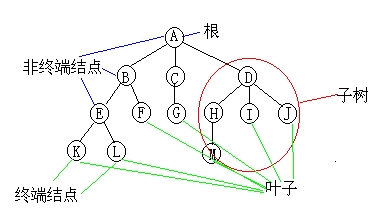
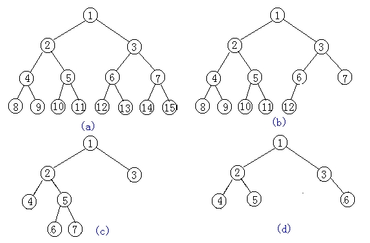
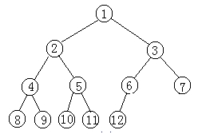

第二十一课
本课主题： 树、二叉树定义及术语
教学目的： 掌握树、二叉树的基本概念和术语，二叉树的性质
教学重点： 二叉树的定义、二叉树的性质
教学难点： 二叉树的性质
授课内容：
一、树的定义：
树是n(n>=0)个结点的有限集。在任意一棵非空树中：
(1)有且仅有一个特定的称为根的结点；
(2)当n>1时,其余结点可分为m(m>0)个互不相交的有限集T1,T2,...Tm,其中每一个集合本身又是一棵树,并且称为根的子树.
二、树的基本概念：
树的结点包含一个数据元素及若干指向其子树的分支。
结点拥有的子树数称为结点的度。
度为0的结点称为叶子或终端结点。
度不为0的结点称为非终端结点或分支结点。

树的度是树内各结点的度的最大值。
结点的子树的根称为该结点的孩子，相应地，该结点称为孩子的双亲。
同一个双亲的孩子之间互称兄弟。
结点的祖先是从根到该结点所经分支上的所有结点。
以某结点为根的子树中的任一结点都称为该结点的子孙。
结点的层次从根开始定义起，根为第一层，根的孩子为第二层。其双亲在同一层的结点互为堂兄弟。树中结点的最大层次称为树的深度，或高度。
如果将树中结点的各子树看成从左至右是有次序的，则称该树为有序树，否则称为无序树。
森林是m(m>=0)棵互不相交的树的集合。

二叉树是另一种树型结构，它的特点是每个结点至多只有二棵子树（即二叉树中不存在度大于2的结点),并且,二叉树的子树有左右之分,其次序不能任意颠倒。
一棵深度为k且有2(k)-1个结点的二叉树称为满二叉树，如图(a)，按图示给每个结点编号，如果有深度为k的，有n个结点的二叉树，当且仅当其每一个结点都与深度为k的满二叉树中编号从1至n的结点一一对应时，称之为完全二叉树。
二叉树的定义如下：
ADT BinaryTree{
数据对象D:D是具有相同特性的数据元素的集合。
数据关系R:
基本操作P:
InitBiTree(&T);
DestroyBiTree(&T);
CreateBiTree(&T,definition);
ClearBiTree(&T);
BiTreeEmpty(T);
BiTreeDepth(T);
Root(T);
Value(T,e);
Assign(T,&e,value);
Parent(T,e);
LeftChild(T,e);
RightChild(T,e);
LeftSibling(T,e);
RightSibling(T,e);
InsertChild(T,p,LR,c);
DeleteChild(T,p,LR);
PreOrderTraverse(T,visit());
InOrderTraverse(T,visit());
PostOrderTraverse(T,visit());
LevelOrderTraverse(T,Visit());
}ADT BinaryTree
三、二叉树的性质

性质１： 在二叉树的第i层上至多有2的i-1次方个结点(i>=1)。 性质２： 深度为k的二叉树至多有2的k次方减1个结点(k>=1)。 性质３： 对任何一棵二叉树T，如果其终端结点数为n0,度为2的结点数为n2,则n0=n2+1。 性质４： 具有n个结点的完全二叉树的深度为|log2n|+1 性质５： 如果对一棵有n个结点的完全二叉树的结点按层序编号，则对任一结点i(1=<i=<n)有：
(1)如果i=1,则结点i是二叉树的根,无双亲;如果i>1,则双亲PARENT(i)是结点i/2
(2)如果2i>n,则结点i无左孩子(结点i为叶子结点);否则其左孩子LCHILD(i)是结点2i
(3)如果2i+1>n,则结点i无右孩子;否则其右孩子RCHILD(i)是结点2i+1
四、总结